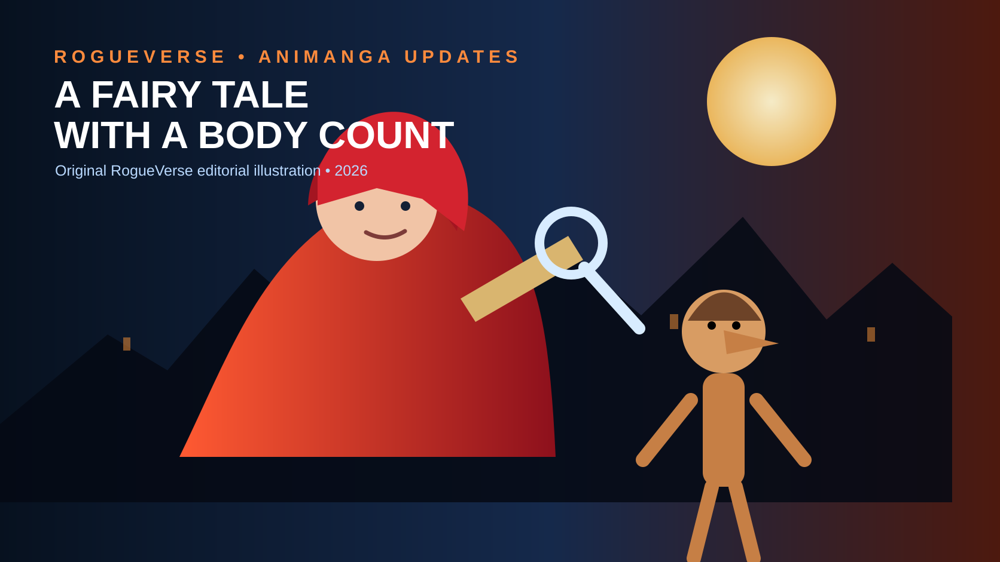

OLD MAN OTAKU / ANIME NEWS • AUGUST 10, 2026
Red Riding Hood Is Solving Murders Now, and Her Detective Story Is Getting a 2027 Anime
Aito Aoyagi's fairy-tale mystery series is officially headed to television. The announcement is bigger than a date reveal: the production has already named its lead cast, director and animation studio.

Little Red Riding Hood has apparently looked at the wolf, the woods and several centuries of fairy-tale tradition and decided the real problem is that nobody is securing the crime scene.
Red Riding Hood: A Detective Story, based on Aito Aoyagi's mystery novels Akazukin, Tabi no Tochū de Shitai to Deau., has officially been announced as a television anime for 2027. The project was revealed August 10 with a teaser visual and promotional video, making it one of the clearest genuinely new anime projects to emerge from the latest announcement cycle.
And there is already more information than the first English summaries suggested.
What is officially confirmed?
The anime is scheduled for 2027, although no specific season or premiere date has been announced. Itsuro Kawasaki is directing and handling the script. BENTEN Film is credited with animation production. Manami Minakata and Yuko Yahiro are handling character design, with Izumi Hoki and Hiroshi Kato serving as art directors.
The two lead voices have also been revealed: Yume Miyamoto plays Red Riding Hood, while Akira Sekine plays Pinocchio.
That correction matters. Early summaries described the cast and production details as unannounced, but Japanese coverage published alongside the reveal confirms both the principal staff and the first two cast members.
So what exactly is Red Riding Hood investigating?
The premise takes familiar Western fairy tales and turns them into murder-mystery territory. Red Riding Hood travels through a world populated by characters audiences already know, only to repeatedly become entangled in crimes. Rather than waiting for a prince, woodsman or conveniently timed magical solution, she uses curiosity, observation and deduction to work out what happened.
That makes the series less "dark fairy-tale retelling" and more fairy-tale detective anthology. The hook is not merely seeing children's-story icons placed in violent situations. The fun comes from treating the internal rules, motives and absurdities of those stories as evidence.
The franchise has already explored Cinderella and other fairy-tale material, giving the anime a ready-made structure: recognizable storybook settings can become individual cases while Red Riding Hood remains the investigative through-line.
This property has already lived more than one life
The upcoming anime is not the first adaptation of Aoyagi's concept. A manga adaptation illustrated by Kanoka Tana ran for four volumes, and the novels previously inspired the 2023 Japanese live-action Netflix film Once Upon a Crime. That film centered on Red Riding Hood becoming involved in a murder mystery while traveling with Cinderella.
The television anime therefore arrives with a useful advantage: the basic concept has already demonstrated that it can move between prose, manga and live action. Animation may be the format with the most freedom to lean into the collision between storybook beauty and crime-scene logic.
Why BENTEN Film makes this worth watching closely
BENTEN Film is a relatively new name in its current form. The studio was previously known as Gaina before adopting the BENTEN Film name in 2025. That makes this project interesting beyond its premise. A recognizable literary property with an established adaptation history gives the studio an opportunity to define what its newer identity looks like on television.
The teaser material will matter because the series needs two visual modes to coexist. The fairy-tale world has to be inviting enough that viewers understand the stories being referenced, while the mysteries need enough atmosphere, visual clues and unease to make the investigations feel consequential.
Go too cute and the crimes lose their bite. Go too grim and the fairy-tale playfulness disappears. The sweet spot is probably somewhere between an illustrated storybook and a locked-room mystery that happens to contain witches.
The cast gives us another clue about the tone
Miyamoto's Red Riding Hood is positioned as the central investigator, while Sekine's Pinocchio is described as her partner. That pairing immediately suggests the anime will not simply repeat the live-action film's Cinderella-centered setup. Pinocchio brings his own built-in relationship with truth, lies and physical evidence, which is almost suspiciously perfect for a detective story.
Whether the anime uses his famous nose as a straightforward lie detector, subverts it, or turns it into part of a larger mystery remains to be seen. But placing Pinocchio beside a detective protagonist gives the writers a toy box full of possibilities.
What is still unknown?
There is still plenty under the red hood. The production has not announced a specific 2027 premiere season, episode count, broadcast slot, international streaming partner, theme-song artists or a larger supporting cast. It also has not yet explained how much of the novel series the first season intends to adapt.
Those are the next details to watch. For now, the important distinction is that this is not a sequel update or another trailer for a production we have been tracking for months. It is a newly announced television anime with a defined creative team, two lead performers and a 2027 target.
Why this one stands out
Anime is never short on fantasy, but this project has a cleaner elevator pitch than most: Little Red Riding Hood solves murders inside fairy tales.
It also sits in a useful lane for viewers who want fantasy without another reincarnation framework. The familiar folklore lowers the barrier to entry, while the detective structure gives the series a reason to reinterpret those stories instead of simply repainting them.
If the adaptation can make its mysteries genuinely satisfying, rather than treating the crime element as decoration, Red Riding Hood: A Detective Story could become one of 2027's stranger sleeper hits.
RogueVerse watch status
Worth tracking. The concept is immediate, the announced staff gives us something concrete to evaluate, and the Red Riding Hood/Pinocchio detective partnership is odd enough to have personality before the first episode even airs.
The next checkpoint is footage. Once a fuller trailer arrives, the big questions will be animation quality, mystery tone and whether BENTEN Film can make this fairy-tale world feel beautiful enough to wander into and dangerous enough to regret it.
Sources & ownership
Reporting cross-checked against the August 10, 2026 announcement coverage from Crunchyroll and Japanese anime press. The original novel series was written by Aito Aoyagi and published by Futabasha. Official anime characters, artwork and related intellectual property belong to their respective creators, publisher and production committee. RogueVerse does not claim ownership of those materials.